Chironius
The genus Chironius (family Colubridae) has 23 living species in SnakeList (none venomous), recorded in 18 countries (+1 territory).
- 23living species
- 23non-venomous
- 18countries
About the genus
A genus of the family Colubridae (colubrids).
Species
Showing 23 species
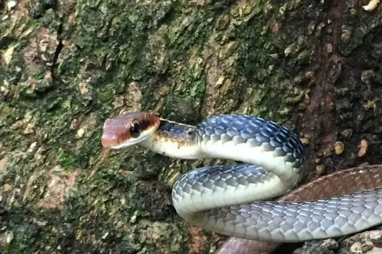
Boettger's SipoChironius flavolineatus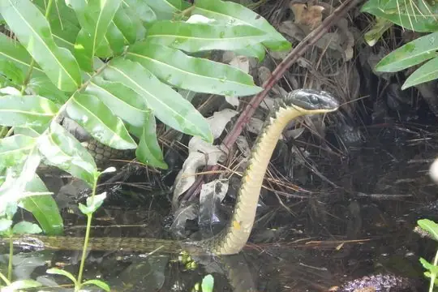
Brazilian SipoChironius laevicollis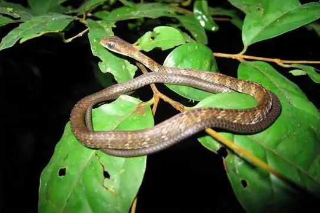
Brown SipoChironius fuscus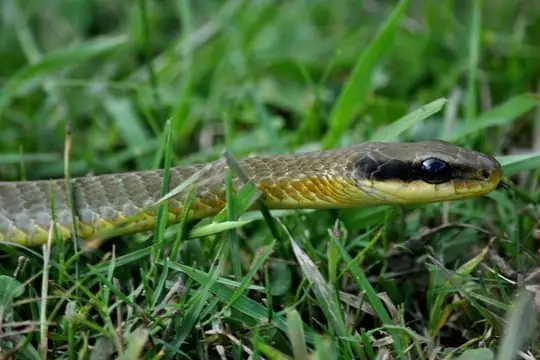
Central Sipo (maculoventris)Chironius maculoventris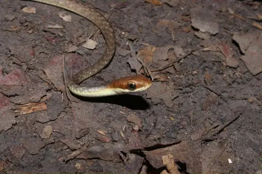
Central Sipo (quadricarinatus)Chironius quadricarinatus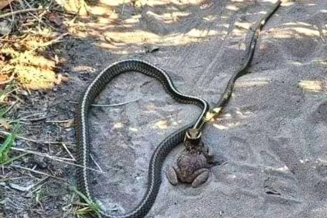
Chapada Diamantina SipoChironius diamantina Ecuador SipoChironius grandisquamis
Ecuador SipoChironius grandisquamis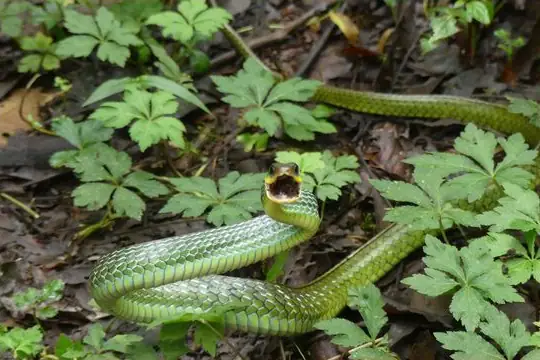
Linnaeus' SipoChironius exoletus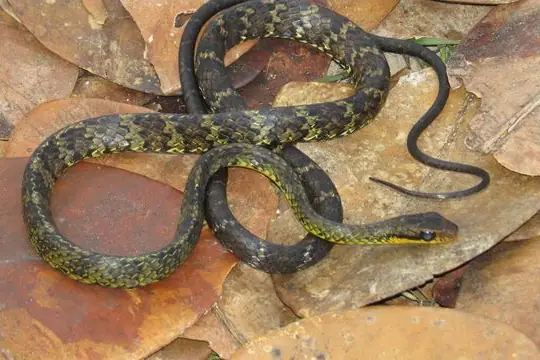
Maringma Tepui SipoChironius challenger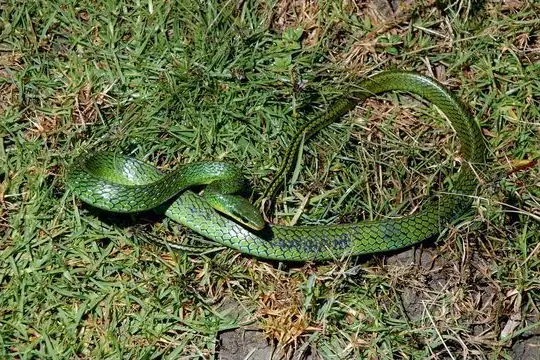
Mountain SipoChironius monticola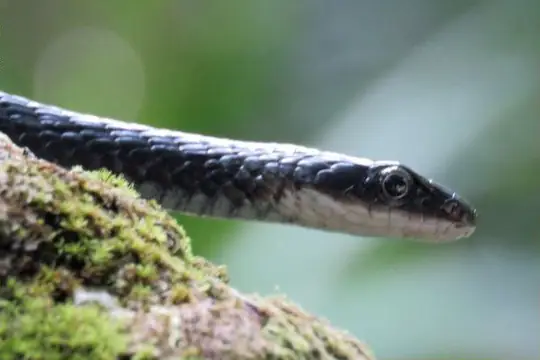
Saint Vincent RacerChironius vincenti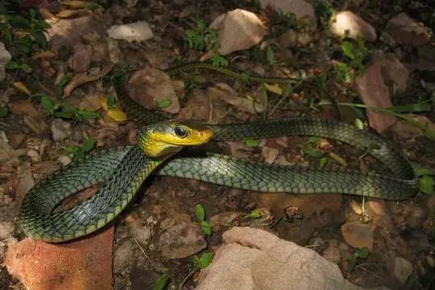
Sipo (carinatus)Chironius carinatus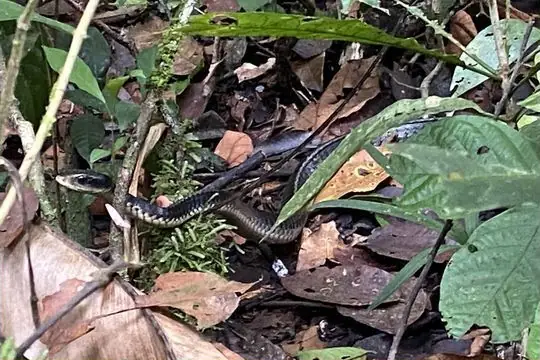
Sipo (flavopictus)Chironius flavopictus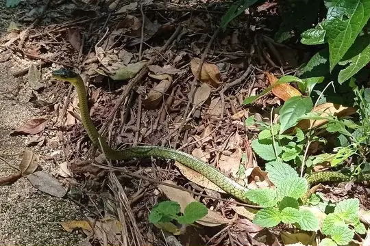
South American Sipo (foveatus)Chironius foveatus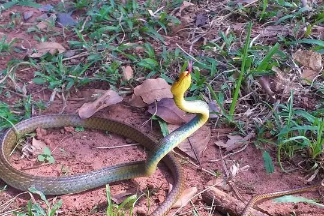
South American Sipo (multiventris)Chironius multiventris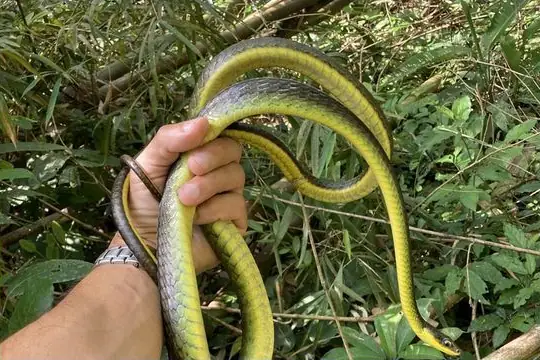
South American Sipo (septentrionalis)Chironius septentrionalis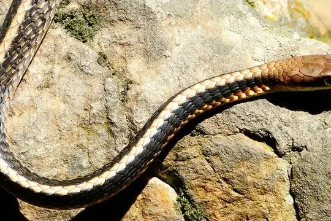
Southeast Brazilian SipoChironius brazili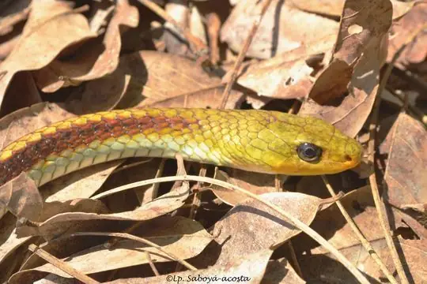
Spix's SipoChironius spixii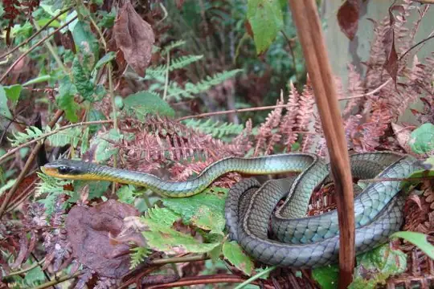
Two-headed SipoChironius bicarinatus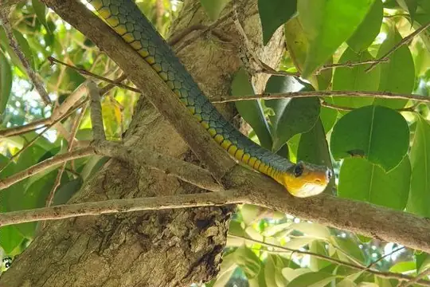
Uruguayan SipoChironius gouveai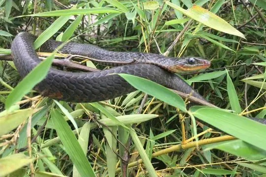
Wagler's SipoChironius scurrulus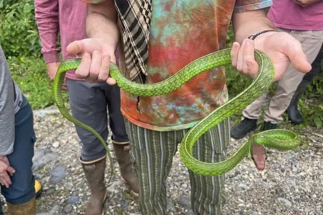
Yellow-headed SipoChironius leucometapus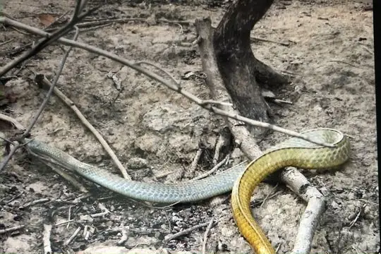
Chironius laurenti
No snakes in Chironius match.
About the genus Chironius
- Distribution: living species recorded in 18 countries (+1 territory), on 2 continents: North America, South America.
- Family: Colubridae.
- Countries and territories: Argentina, Bolivia, Brazil, Colombia, Costa Rica, Ecuador, El Salvador, French Guiana, Guyana, Honduras, Nicaragua, Panama, Paraguay, Peru, Saint Vincent and the Grenadines, Suriname, Trinidad and Tobago, Uruguay, Venezuela.
Compare its species
Its living species side by side. Lengths come only from SnakeList’s reviewed, sourced accounts; the others are left blank rather than guessed.
| Species | Venom | Recorded in | Adult length (reviewed accounts) |
|---|---|---|---|
| Boettger's Sipo Chironius flavolineatus | Non-venomous | 2 countries (South America) | No reviewed account yet |
| Brazilian Sipo Chironius laevicollis | Non-venomous | 1 country (South America) | No reviewed account yet |
| Brown Sipo Chironius fuscus | Non-venomous | 8 countries (+1 territory) (South America) | No reviewed account yet |
| Central Sipo (maculoventris) Chironius maculoventris | Non-venomous | 4 countries (South America) | No reviewed account yet |
| Central Sipo (quadricarinatus) Chironius quadricarinatus | Non-venomous | 9 countries (+1 territory) (South America) | No reviewed account yet |
| Chapada Diamantina Sipo Chironius diamantina | Non-venomous | 1 country (South America) | No reviewed account yet |
| Ecuador Sipo Chironius grandisquamis | Non-venomous | 9 countries (North America, South America) | No reviewed account yet |
| Linnaeus' Sipo Chironius exoletus | Non-venomous | 8 countries (+1 territory) (North America, South America) | No reviewed account yet |
| Maringma Tepui Sipo Chironius challenger | Non-venomous | 2 countries (South America) | No reviewed account yet |
| Mountain Sipo Chironius monticola | Non-venomous | 5 countries (South America) | No reviewed account yet |
| Saint Vincent Racer Chironius vincenti | Non-venomous | 1 country (North America) | No reviewed account yet |
| Sipo (carinatus) Chironius carinatus | Non-venomous | 9 countries (+1 territory) (South America) | No reviewed account yet |
| Sipo (flavopictus) Chironius flavopictus | Non-venomous | 4 countries (North America, South America) | No reviewed account yet |
| South American Sipo (foveatus) Chironius foveatus | Non-venomous | 1 country (South America) | No reviewed account yet |
| South American Sipo (multiventris) Chironius multiventris | Non-venomous | 6 countries (South America) | No reviewed account yet |
| South American Sipo (septentrionalis) Chironius septentrionalis | Non-venomous | 3 countries (South America) | No reviewed account yet |
| Southeast Brazilian Sipo Chironius brazili | Non-venomous | 1 country (South America) | No reviewed account yet |
| Spix's Sipo Chironius spixii | Non-venomous | 3 countries (South America) | No reviewed account yet |
| Two-headed Sipo Chironius bicarinatus | Non-venomous | 2 countries (South America) | No reviewed account yet |
| Uruguayan Sipo Chironius gouveai | Non-venomous | 3 countries (South America) | No reviewed account yet |
| Wagler's Sipo Chironius scurrulus | Non-venomous | 7 countries (+1 territory) (South America) | No reviewed account yet |
| Yellow-headed Sipo Chironius leucometapus | Non-venomous | 2 countries (South America) | No reviewed account yet |
| Chironius laurenti | Non-venomous | 1 country (South America) | No reviewed account yet |